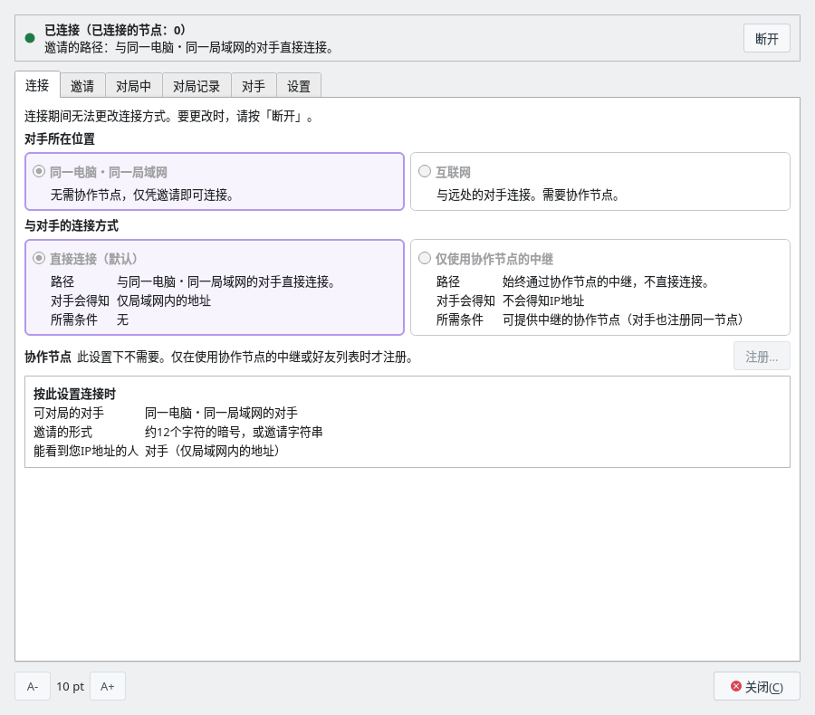
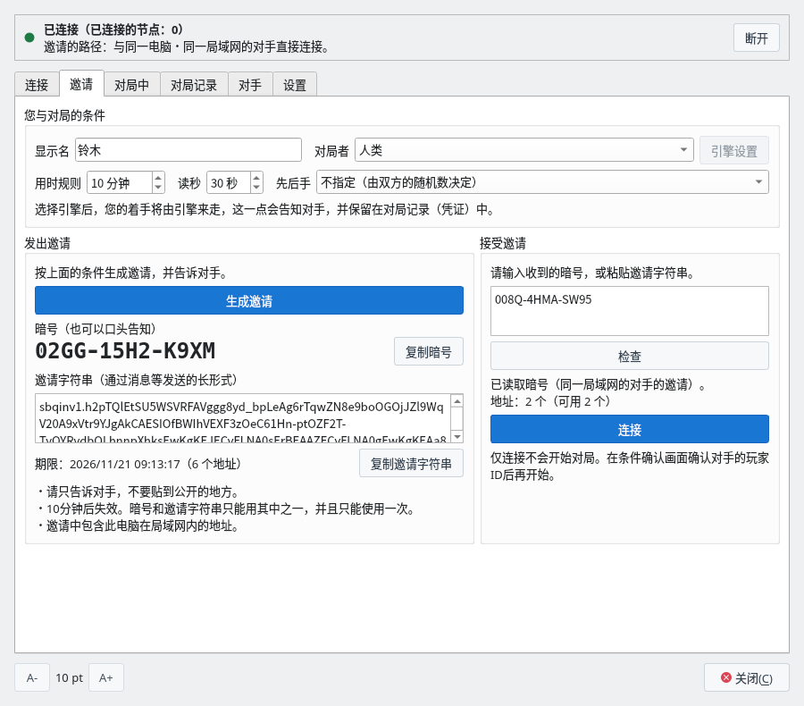

不用协作节点可以对局的对手
选择“同一电脑・同一局域网”后，不需要注册协作节点
把“连接”标签页的“对手所在位置”设为“同一电脑・同一局域网”并连接后，邀请字符串中会放入这台电脑在局域网内的地址（192.168.… 等）和只在同一台电脑内使用的地址。对手的电脑可以直接到达这些地址，因此不需要居中协调的协作节点。
| 对手 | 能否连接 |
|---|---|
| 在同一台电脑上运行的另一个应用 | 可以（在同一台电脑上试用） |
| 同一局域网（家庭或单位中同一路由器下的网络）中的另一台电脑 | 可以（与同一局域网的另一台电脑对局） |
| 互联网上的对手（另一个家庭、手机网络等） | 不可以。请参阅使用协作节点对局 |
在这个网络中，只接受来源为同一台电脑或局域网内地址的连接。来自互联网的连接不会被接受。
- “协作节点”：无需注册。以“同一电脑・同一局域网”选择“直接连接（默认）”期间，输入栏也不会显示（显示“此设置下不需要。…”）。
- “与对手的连接方式”：保持“直接连接（默认）”不变。选择“仅使用协作节点的中继”后，局域网内的直接连接也不再使用，没有注册协作节点就无法连接（显示“这样无法使用中继”）。
- 对手能看到的地址：只有局域网内的地址。互联网上的 IP 地址不会交给对手。邀请字符串中包含这台电脑在局域网内的全部地址（也包括 VPN 和虚拟设备的地址），暗号中也包含局域网内的地址，请只告诉对手。
- 使用期限：没有。构建后超过 180 天仍可使用（只有“互联网”有期限）。
开始对局的步骤
双方都以“同一电脑・同一局域网”连接，一方输入另一方生成的暗号
用“对局”→“P2P对局…”打开窗口。第一次使用时，生成玩家密钥并填入显示名（准备）。
在“连接”标签页中，确认“对手所在位置”为“同一电脑・同一局域网”，“与对手的连接方式”为“直接连接（默认）”（第一次打开时就是这样），然后点击窗口上方的“连接”。上方的状态栏变为“已连接（已连接的节点：0）”，其下显示“邀请的路径：与同一电脑・同一局域网的对手直接连接。”即准备完毕（在与对手连接之前，节点数一直是 0）。


以“同一电脑・同一局域网”连接后
邀请方先在“邀请”标签页中设定“用时规则”“读秒”“先后手”。对局按这些条件进行。
在同一标签页的“发出邀请”中点击“生成邀请”，就会以大号字显示 12 个字符左右的暗号（K7MP-2QXD-9F3A 的形式）。请只把这个暗号告诉对方：在同一个房间里可以口头告知，不在一起时可以通过电话或消息告知（可以用“复制暗号”复制）。邀请 10 分钟后失效，生成后请立即告知对方。
暗号下方的输入框中，还会显示同一邀请的邀请字符串（较长的字符串）。直接发送文字更方便时，或用暗号无法连接时，请用“复制邀请字符串”复制，通过私信等只能送达对方的方式交给对方。暗号和邀请字符串是同一个邀请，只能用其中之一，并且只能使用一次。输入框下方会显示期限和地址数量。
被邀请方在“邀请”标签页的“接受邀请”栏中输入暗号（收到的是邀请字符串时则粘贴），点击“检查”。暗号可以用小写输入，也可以省略分隔符“-”。显示“已读取暗号（同一局域网的对手的邀请）。”和地址数量后（邀请字符串则显示邀请方的 PeerId、期限和地址数量），点击“连接”。
被邀请方无需设定用时规则等条件（按邀请方的条件对局）。只需填好“显示名”。


左：邀请方生成了邀请（暗号和邀请字符串） 右：被邀请方检查暗号后
可以邀请的人数与次数
对局是两人一次一局。邀请字符串要为每位对手各生成一个
- 只能一人：一个邀请字符串只能让一个人连接。对手连接的那一刻，这个邀请字符串就不能再用了。
- 暗号和邀请字符串是同一个邀请：暗号和邀请字符串是同一个邀请的两种形式。对手用其中之一连接后，另一个也不能再用了。期限（10 分钟）也相同。输入已过期或已被使用的暗号时，会显示“已连接到对手，但暗号未被接受。…”。
- 10 分钟后过期：即使没有使用，生成 10 分钟后也会失效（粘贴的人会看到“邀请字符串已过期。”）。
- 一对一对局：没有三人以上下同一局的机制，也没有他人观战的机制。
- 再下一局：对局结束后会关闭连接。要与同一对手再下一局时，请生成新的邀请字符串交给对方。
- 同时最多 4 个：可以为几个人各生成一个邀请字符串交给他们。同时有效的最多 4 个，生成第 5 个时，最早的一个会失效。
- 一个应用一次只能下一局：会与最先连接的人进入条件确认。在此期间和对局中，其他人无法连接（条件确认期间，对方会看到“对手正在与他人协商或对局。”）。对于没能连接的人，请在对局结束后交给他们新的邀请字符串。8 人同时下 4 局时，每组由一方邀请另一方（一对一对局，一个应用一次一局）。
- 对局后仍可使用：对局结束后，仍在期限内且尚未使用的邀请字符串依然有效。
- 条件以最后一次生成时为准：所有有效的邀请字符串，都按最后一次点击“生成邀请”时的显示名、用时规则、读秒、先后手和对局者（人类还是引擎）对局。要更改条件时，请先更改再重新生成。
- 全部取消：点击窗口上方的“断开”，所有有效的邀请字符串都会失效。
两人中任何一方邀请都可以。用时规则和先后手按邀请方的条件。被邀请方不需要生成邀请字符串。自己生成的邀请字符串不能自己使用（会显示“这是您自己生成的邀请字符串。”）。
与同一局域网的另一台电脑连不上时，交换邀请方后有时可以连接。等待连接的是邀请方的电脑，因此与那台电脑的防火墙有关（下一节）。
与同一局域网的另一台电脑对局
邀请方的电脑在 TCP 和 UDP 的 48210 号端口等待连接
邀请方的电脑在 TCP 和 UDP 的 48210 号端口等待对手的连接（在同一台电脑上运行第二个应用时，第二个使用空闲的端口）。如果电脑的防火墙阻止了到这个端口的连接，对手会看到“无法连接到对手。”。
使用 firewalld 时，可以用下面的命令允许连接，直到重新启动为止。
$ sudo firewall-cmd --add-port=48210/tcp --add-port=48210/udp使用 ufw 时，可以用 sudo ufw allow 48210 允许（不再需要时用 sudo ufw delete allow 48210）。应用只接受来源为局域网内地址的连接，因此即使开放端口，来自互联网的连接也会被拒绝。
在 Windows 上，开始监听时不会出现防火墙的确认画面（通信进程在允许与同一局域网通信的容器（AppContainer）中运行）。同一台电脑上两个应用之间的对局已经确认可用。来自其他电脑的连接能否通过，取决于 Windows 是否把该网络视为“专用”网络以及 Windows 防火墙的设置（与其他电脑的对局尚未确认）。
在 macOS 上，同一台电脑上两个应用之间的对局也已经确认可用。与其他电脑连接时，如果开启了 macOS 的防火墙，macOS 可能会询问是否允许传入连接；第一次与局域网内的对方通信时，可能会询问是否允许访问“本地网络”（由 macOS 电脑邀请、同一局域网的 Linux 电脑连接的对局已经确认可用）。
| 显示的消息・状态 | 要检查的内容 |
|---|---|
| “这是其他网络的邀请字符串。” | 两人的“对手所在位置”不同。两人都重新以“同一电脑・同一局域网”连接，并重新生成邀请字符串。 |
| “邀请字符串已过期。” | 生成后已超过 10 分钟。请重新生成邀请字符串。 |
| “无法连接到对手。” | 检查邀请方电脑的防火墙（上面的 1）。交换邀请方后也可能连接成功。 |
| “邀请的路径”中显示“无法使用中继。…” | 选择了“仅使用协作节点的中继”。请点击“断开”后，把“连接”标签页的“与对手的连接方式”改回“直接连接（默认）”，然后重新连接。 |
| “对手正在与他人协商或对局。” | 对手正在与他人确认条件或对局。结束后请向对方要新的邀请字符串。 |
| 访客 Wi-Fi 等 | 在阻止已连接设备之间通信的网络中，即使在同一局域网也无法连接。 |
在同一台电脑上试用
在同一台电脑上启动多个本应用，就能用一台电脑试着对局
在同一台电脑上多次启动本应用，并分别打开“P2P对局”，第二个会自动以“第2位玩家”的身份打开，第三个为“第3位玩家”（最多同时8个）。窗口标题和顶部的说明会显示是第几位玩家。只启动一个应用时，始终是第1位玩家。
玩家密钥（玩家ID）、显示名、对局记录和对手列表会按玩家分别保存。两边都以“同一电脑・同一局域网”连接，然后把其中一个生成的暗号输入到另一个（粘贴邀请字符串也可以），无需协作节点即可对局。由于是同一台电脑内的连接，通常也不需要设置防火墙。
常见问题
不使用协作节点对局时常见的疑问及其解答
不需要。在“同一电脑・同一局域网”下，邀请字符串中包含这台电脑在局域网内的地址，对手的电脑可以直接到达。用这种方式无法连接互联网上的对手（使用协作节点对局）。
对同一局域网的对手，用暗号比较方便。暗号只有 12 个字符左右，可以口头或通过电话告知，对方可以手动输入。邀请字符串是同一邀请的较长形式，用于通过消息等直接发送文字。暗号中最多只包含这台电脑在局域网内的 4 个地址，因此用暗号无法连接时，请试试邀请字符串。两者是同一个邀请，只能用其中之一，并且只能使用一次。“互联网”的邀请，在使用支持暗号的协作节点时，会得到另一种形式的暗号（10 个字符，不包含连接地址）（使用协作节点对局）。
可能是邀请方电脑的防火墙阻止了到 TCP 和 UDP 的 48210 号端口的连接。请开放端口，或交换邀请方（与同一局域网的另一台电脑对局）。在访客 Wi-Fi 等阻止已连接设备之间通信的网络中，即使在同一局域网也无法连接。
因为等待连接的只有邀请方的电脑。被邀请方的电脑是自己发起连接的，通常不会被防火墙阻止。因此，由没有阻止外来连接的那台电脑邀请，就能连上。例如，由 Linux 电脑邀请、macOS 电脑连接时连不上的一组电脑，改为由 macOS 电脑邀请、Linux 电脑连接后，就可以对局了（在 Linux 上，firewalld 或 ufw 经常会阻止外来的连接）。要让两台电脑都能邀请，请在各自的电脑上开放端口（在防火墙中开放端口）。
一个邀请字符串只能让一个人连接一次，生成 10 分钟后失效。与同一对手再下一局时，请重新生成邀请字符串。要交给几个人时，为每个人各生成一个（同时有效的最多 4 个）。一次只能下一局（可以邀请的人数与次数）。
是邀请字符串中包含的连接地址的数量（最多 8 个）。在“同一电脑・同一局域网”下，其中包含这台电脑在局域网内的地址（每个网络接口各有 UDP 和 TCP 一个，也包括 VPN 和虚拟设备的地址）和只在同一台电脑内使用的地址，因此数量因电脑而异。
不要选择。选择后，局域网内的直接连接也不再使用，没有注册协作节点就无法连接（“连接”标签页中显示“这样无法使用中继”）。在“同一电脑・同一局域网”下，对手能看到的只有局域网内的地址。这个设置用于在通过互联网对局时不让对手看到 IP 地址（不让对手看到 IP 地址对局）。
可以。在同一台电脑上启动两个本应用，并分别打开“P2P对局”，第二个会自动以“第2位玩家”的身份打开。玩家密钥、显示名和对局记录按第几位玩家分别保存（在同一台电脑上试用）。
连接会断开，有效的邀请字符串也会失效。对局中退出时，无法回到同一局对局，结果不会确定（线路断开时）。只关闭 P2P对局的窗口时，连接和对局都会继续。